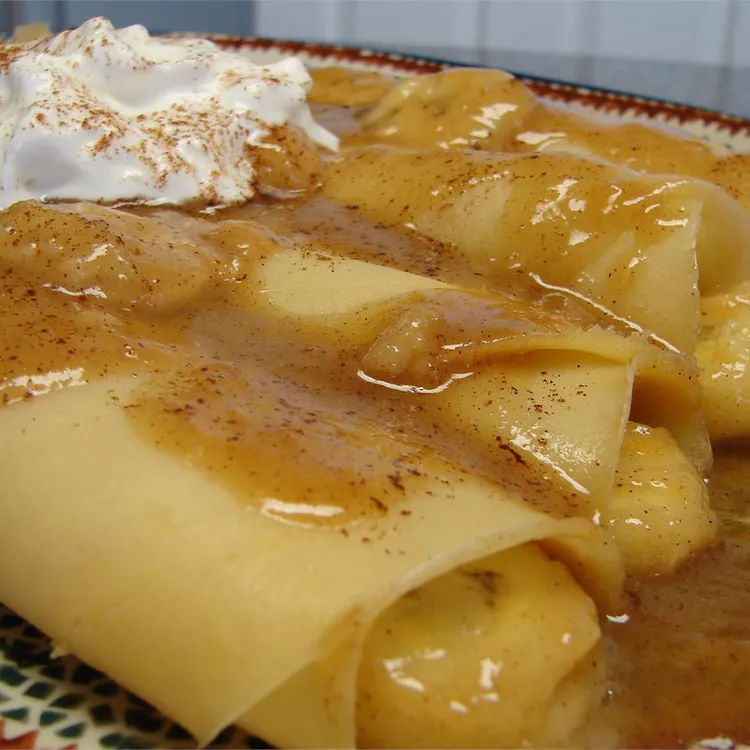

Banana Crepes

Description
Decadent banana crepes topped with whip cream and cinnamon, as well as warm banana cream sauce.
Ingredients
- 1 cup all-purpose flour
- 1/4 cup confectioners' sugar
- 2 eggs
- 1 cup milk
- 3 tablespoons butter, melted
- 1 teaspoon vanilla extract
- 1/4 teaspoon salt
- 1/4 cup butter
- 1/4 cup packed brown sugar
- 1/4 teaspoon ground cinnamon
- 1/4 teaspoon ground nutmeg
- 1/4 cup half-and-half cream
- 6 bananas, halved lengthwise
- 1 1/2 cups whipped heavy cream
- 1 pinch ground cinnamon
Steps
- Sift flour and powdered sugar into a mixing bowl. Add eggs, milk, butter, vanilla, and salt; beat until smooth.
- Heat a lightly greased 6 inch skillet. Add about 3 tablespoons batter. Tilt skillet so that batter spreads to almost cover the bottom of skillet. Cook until lightly browned; turn and brown the other side. Repeat process with remaining batter, grease skillet as needed.
- Melt 1/4 cup butter in a large skillet. Stir in brown sugar, 1/4 teaspoon cinnamon and nutmeg. Stir in cream and cook until slightly thickened. Add half the bananas at a time to skillet; cook for 2 to 3 minutes, spooning sauce over them. Remove from heat.
- Roll a crepe around each banana half and place on serving platter. Spoon sauce over crepes. Top with whupped cream and a pinch of cinnamon.
Home